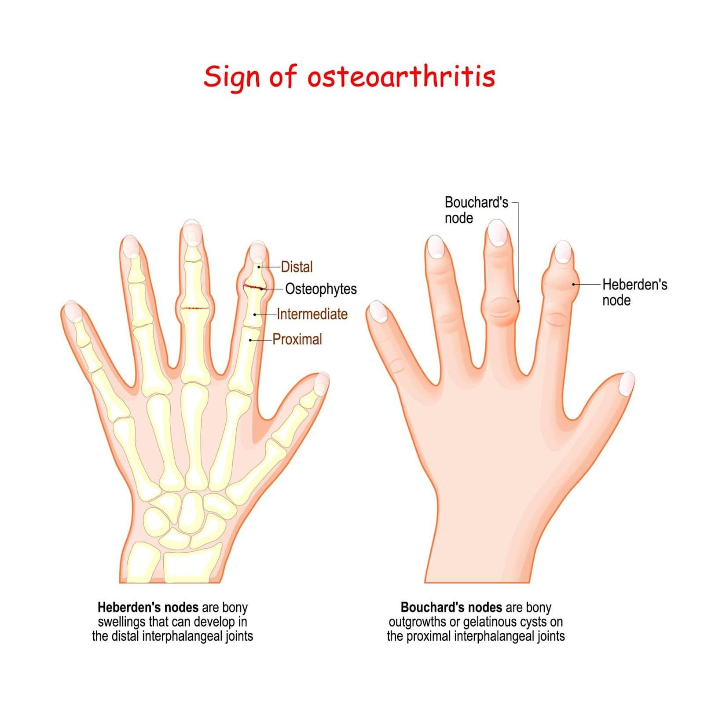
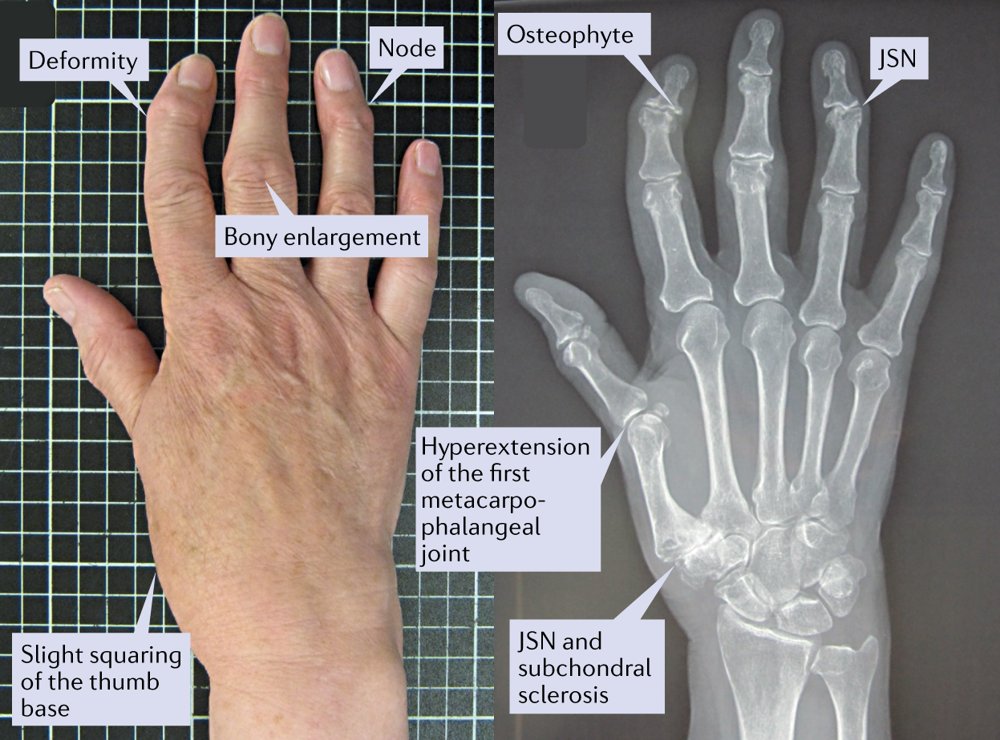
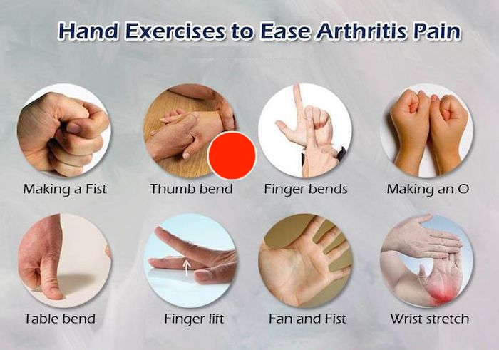

Welcome to My BIO 1004 Project
This interactive website explores Osteoarthritis of the Hand, with special focus on the thumbs and fingers. It combines scientific information, images, and interactive elements to educate viewers.
Brief History
Osteoarthritis has affected humans for thousands of years. In 1802, William Heberden described the bony enlargements now known as Heberden’s nodes. Modern research views OA as a whole-joint disease involving cartilage degradation, bone remodeling, and low-grade inflammation.
Cause and Risk Factors
Multifactorial disease involving progressive cartilage breakdown. Major risk factors: advanced age, female sex (post-menopause), genetics, obesity, and repetitive mechanical stress on the hands.
Epidemiology
Affects ~33.2 million U.S. adults. In Colorado, arthritis impacts ~24.8% of adults. Significantly higher prevalence in women after age 50.
Signs and Symptoms
Pain worsened by activity, brief morning stiffness, reduced grip strength, Heberden’s nodes (DIP), Bouchard’s nodes (PIP), crepitus, and thumb base deformity.

Heberden’s nodes at the distal interphalangeal joints
Diagnosis
Based on clinical history, physical examination, and X-rays showing joint space narrowing, osteophytes, and subchondral sclerosis.

Radiographic image of thumb carpometacarpal osteoarthritis
Management, Treatment & Prevention
Focus on therapeutic exercise, joint protection techniques, splinting, weight management, and ergonomics. No cure exists, but function can be well preserved.

Examples of therapeutic hand exercises
Interactive Quiz – Test Your Knowledge
1. Is osteoarthritis purely "wear and tear"?
False True
2. What is a recommended first-line treatment?
Therapeutic exercise Long-term bed rest
Prognosis
With early and consistent management, many people maintain good hand function and quality of life for years. This project is personally relevant as my father is experiencing early thumb and finger OA symptoms.
Creator’s Statement
This website was built from scratch using HTML, CSS, and JavaScript to create an engaging, educational experience. I incorporated real images, smooth navigation, and an interactive quiz to go above a basic presentation and demonstrate substantial effort.